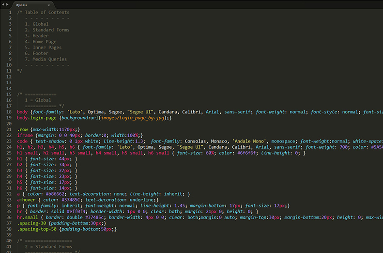
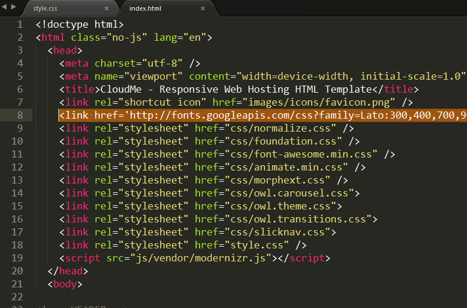
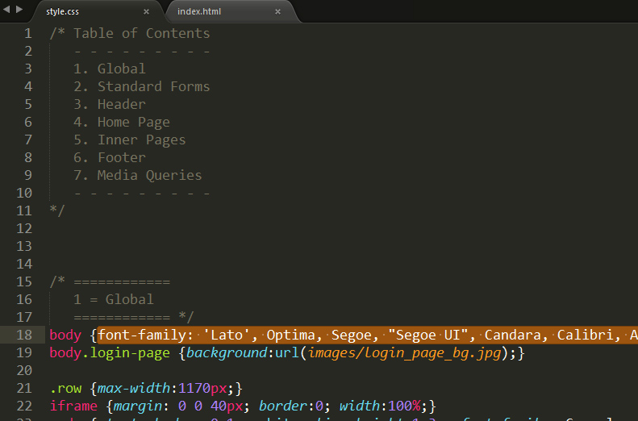

Thank you for purchasing the CloudMe HTML template.
How to get help:
We will respond to buyers' questions via the contact form on our profile.
We run support Weekdays 9am-5pm GMT. You can expect a response within 12 – 24 hours Monday to Friday. We’ll respond to questions outside of these times & weekends occasionally, but please don’t expect a response outside our stated hours.
Support requests are for:
- Help using templates
- Instructions setting up templates
- Bug reports and fixes
Support requests aren’t for:
- Help with 3rd party plugins
- Integration of 3rd party plugins
- Customizations of our templates
Thanks for your purchase!
The CloudMe template is a responsive HTML template based on Zurb Foundation. The structure based on a flexible grid that lets you change HTML pages quickly and logically with a nestable system.
If you would like to edit the layout of any elements in whole template, you would do the following:
Open the file /style.css, so that is extremely easy to change any css attributes. Simply find the related and commented heading in this css file and make your magic.

The font is Lato from Google Web fonts and if you like to change it with a usual web safe font (arial, verdana etc.) you must remove from
section of each page the line and also change the font-family class of various elements of file /style.css from font-family: 'Lato', Optima, Segoe, "Segoe UI", Candara, Calibri, Arial, sans-serif; to font-family: Verdana; (for example)

CloudMe using the following CSS files:
style.css
The main css file
css/animate.min.css
The main library for animation effects that you see on various pages.
css/font-awesome.min.css
The css file for font-awesome icons. To see all the available icons and instructions on how to use them click here
css/foundation.css
The main responsive grid stylesheet, from Zurb foundation framework. It is recommended to make any changes/additions to style.css and keep foundation.css as it is. In this way, you can easily upgrade the grid framework when Zurb Foumdation releases an update.
css/normalize.css
Normalize.css is a customisable CSS file that makes browsers render all elements more consistently and in line with modern standards. You don't need to touch anything in this file.
css/owl.carousel.css
The base stylesheet for carousels that the template using (testimonials in home page, carousel with fade effect in datacenter page, one item carousel in blog category)
css/owl.theme.css
The stylesheet that define the appearance of carousels. You can change saome things, for examople the color/size of pagination bullets.
css/morphext.css
The stylesheet for word rotator in home page (just below the logo / navigation)
css/slicknav.css
The stylesheet for menu on small screens and mobiles.
css/tablesaw.stackonly.css
The stylesheet for responsive tables (exists in dedicated servers page)
CloudMe using jQuery framework with various additional plugins. Also, there are all the js files of Zurb Foundation framework (in folder /js/foundation/) in case that you want to use them.
js/foundation.min.js
The main js file that hook the supported scripts of Zurb Foundation framework
js/foundation folder
is a directory that contains each plugin of Zurb Foundation framework as a single JavaScript file, so you can check out the source code and, if you'd like, include certain ones but not others, or do your own minifying.
js/vendor/contact-script.js
The scripts that validates the contact form script in the contact page
js/vendor/hoverIntent.js
A helper file that make clickable each main menu options on touch screens.
js/vendor/jquery.animateNumber.min.js
The number counters in home page (call to action discout number / loved by developers number). The hook of the script exists in js/custom.js file on line 36 and 52. You can change there the end number and the delay of counting until this number.
js/vendor/jquery.js
The jQuery framework
js/vendor/jquery.slicknav.min.js
The menu on small screens and mobiles. The hook of the script exists in js/custom.js file on line 12.
js/vendor/modernizr.js
Modernizr gives you finer control over the experience through JavaScript-driven feature detection. You don't need to touch anything here.
js/vendor/owl.carousel.min.js
The script for carousels that the template using (testimonials in home page, carousel with fade effect in datacenter page, one item carousel in blog category). The hook of the script for each page exists in js/custom.js file on line 39.
js/vendor/superfish.js
The main navigation menu script with it submenus. The hook of the script for each page exists in js/custom.js file on line 4.
js/vendor/waypoints.min.js
The script that hooks the number counters when the specific section is in vewport. You don't need to touch anything here.
js/vendor/masonry.pkgd.min.js
The script that generates the masonry layout in testimonials page.
js/vendor/morphext.min.js
The script that generates the rotating words in home page.
js/vendor/tablesaw.stackonly.js
The script that convert the tables to responsive layout in smaller screens.
js/vendor/wow.min.js
The script that using for animations (in combination with animate.min.css) while scrolling the page
CloudMe HTML template includes a basic WHMCS template (header/footer integration, no responsive) based on WHMCS popular Default template. To install it, just upload the cloudme folder that exists in WHMCS folder in your downloaded files, to your WHMCS installation in /templates folder. Then login to WHMCS, go to SETUP > GENERAL SETTINGS and choose CloudMe in the templates drop-down. You'll have a same design between your main site (HTML template) and your WHMCS installation!
Just separate the words/phrases with comma(,).
Number counters has been defined by its id (for example ). You can define each number counter by its id in js/custom.js (sections = // ______________ DISCOUNT NUMBER - CALL TO ACTION ON HOME PAGE and // ______________ LOVED BY DEVELOPERS NUMBER - CALL TO ACTION ON HOME PAGE). Define where to start (prop=0), where to end (number:) and the seconds that this counting takes until the end.
You can do this, by using "wow" class and the class for the specific animation.
For example :
It is in sendmail.php, line 17 ($site_owners_email=)
You can download them from :
1) http://www.smashingmagazine.com/2014/06/19/freebie-ballicons-2-icon-set-png-psd-svg/
2) http://www.smashingmagazine.com/2014/05/27/summer-essentials-icon-set-freebie-eps-png-ai/
you can download and use them to your projects (Creative Commons 3.0), unfortunately we can't bundle them with the template because the redistribution is prohibited.